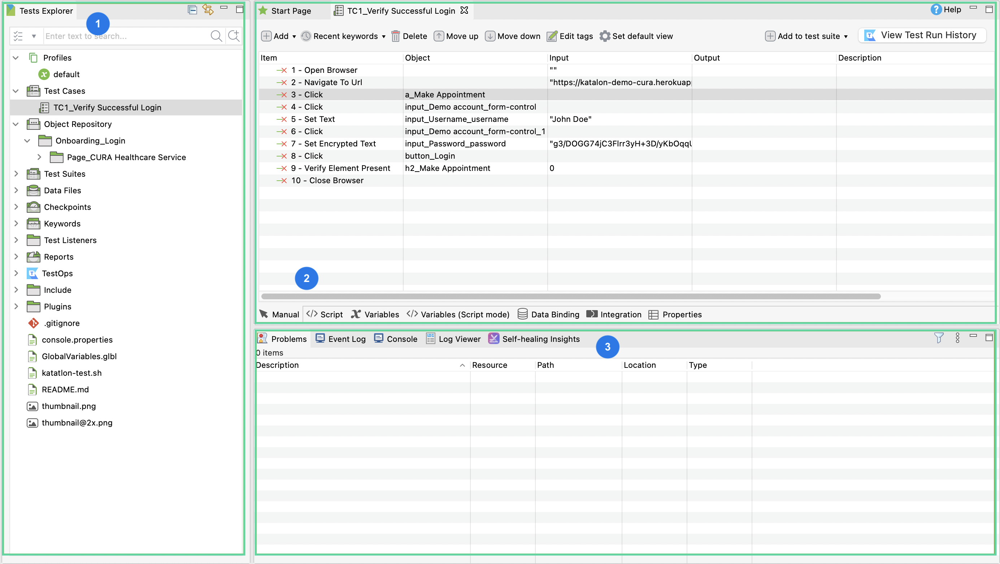
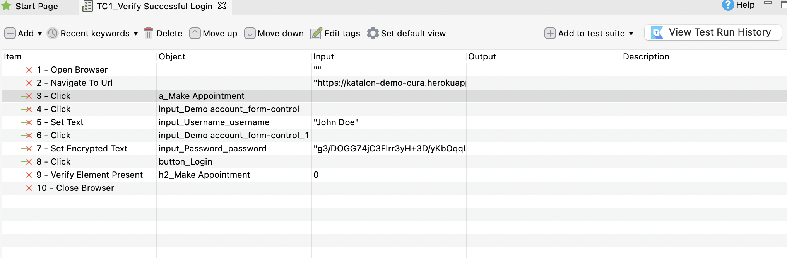
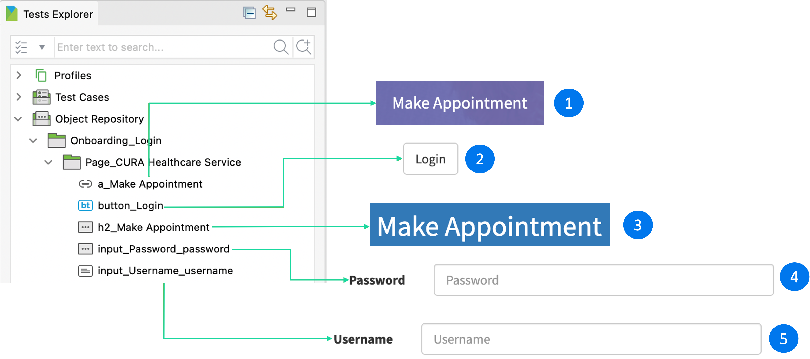
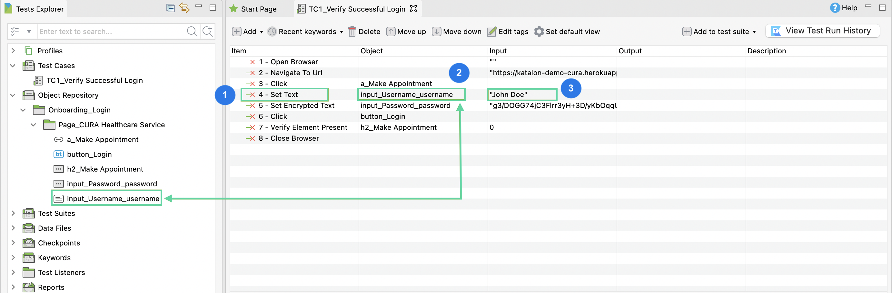
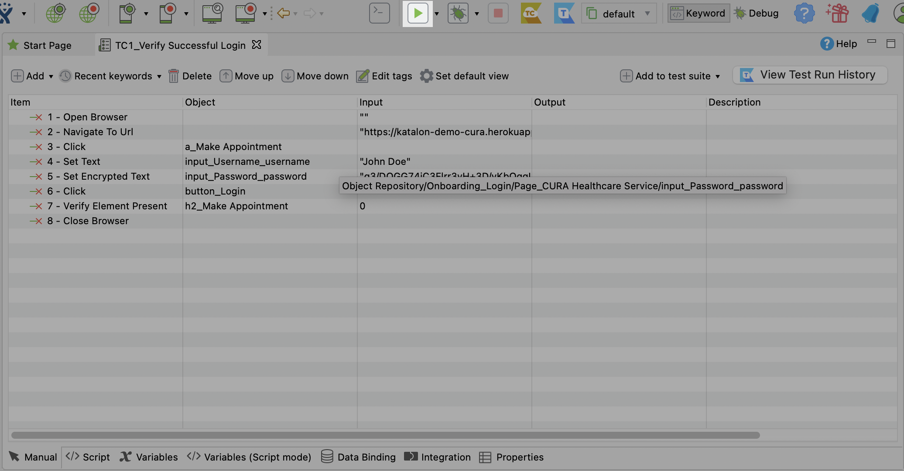

#4 Review your recorded test case
After each recording, you can review the recorded actions and the generated test objects. This section helps you familiarize with Katalon Studio interface and explore the connection between the recorded actions and the object repository.
The Katalon Studio user interface
After saving your recording, Katalon Studio opens the recorded test case in the editor view. Below are places you can interact with its associated test artifacts.

Tests Explorer: The Tests Explorer displays all folders, references, and files associated with the opened test project.
After saving your recording, a new test case and the captured test objects are located in the Test Cases and Object Repository folder respectively.
The test case editor displays the test case steps. You can add, edit, move or remove steps in a test case in different editing modes: manual or script.
You can also add variables and additional information for the test case. To learn more about the tabs in the editor view, see: Toolbars and views.The output section: Here displays the problems and errors before and during the test execution for troubleshooting.
Recorded actions

Action #1 and #2: Open the browser and navigate to the website under test.
Action #3: Click Make Appointment button.
Action #4 and #5: Click the username text box and input the
John Doeusername.Action #6 and #7: Click the password text box and input the password. When you enter the Password field, Web Recorder Utility uses the
Set Encrypted Textkeyword automatically. This helps encrypt the input value to ensure security.Action #8: Click Login.
Action #9: Verify the Make Appointment heading in the successful login page.
Action #10: Close browser.
- If you did not follow the recording instructions precisely, there may be extra recorded actions. If so, identify actions which do not belong to the intended test and delete them.
Test Objects
The actions listed above controls the UI elements in the application under test (AUT). These UI elements are represented by test objects in the Tests Explorer > Object Repository.
Double-click to open a test object. By default, these test objects are detected by XPath. Once a test object is captured using Spy/Recorder, a set of XPath locators is generated. The first value is the object default XPath locator. You can view, edit, or delete these test objects.
The following picture explains the captured test objects from the recorded test case:

1. a_Make Appointment: This test object represents the Make Appointment button.
2. button_Login: This test object represents the Login button.
3. h2_Make Appointment: This test object represents the Make Appointment heading.
4. input_Password_password: This test object represents the Password text box.
5. input_Username_username: This test object represents the Username text box.
The link between actions and objects repository
Actions that control UI elements, such as clicking a button, are automatically linked to the corresponding test object. In the manual mode of the test case editor view, you can see the test objects and the actions are in the same row.
Actions that don't control UI elements, such as opening a browser, aren't linked to test objects. The following pictures explains the relationship of actions and test objects in our recording.

1. Item column: This lists the actions that control the test objects. Here, the Set Text action inputs John Doe into the Username text box.
2. Object column: This contains the test objects corresponding with the actions.
3. Input column: This specifies the data that the action should input, for example: the text to fill in a text box, the delay time to open a browser.
Playback
After a recording, you can also playback to recheck your test case. This helps prevent errors in your test scripts. To do so, open the test case you want to playback. From the main toolbar, click Run.

Katalon Studio will execute the chosen test case with the recorded steps accordingly.